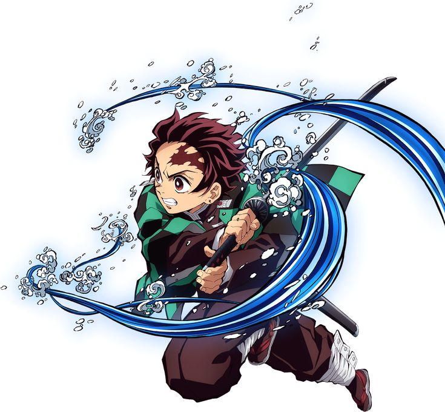

Tanjiro Kamado
Tanjiro is the protagonist of the series, known for his compassion, determination, and keen sense of smell. He wields Water Breathing techniques and later develops the Hinokami Kagura, a powerful style linked to his family.